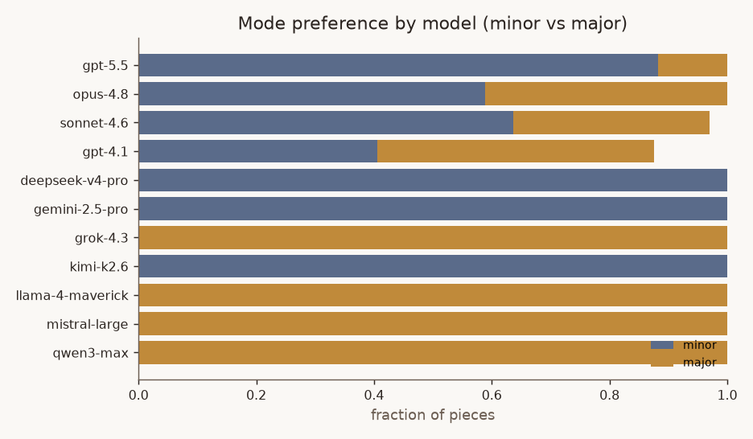
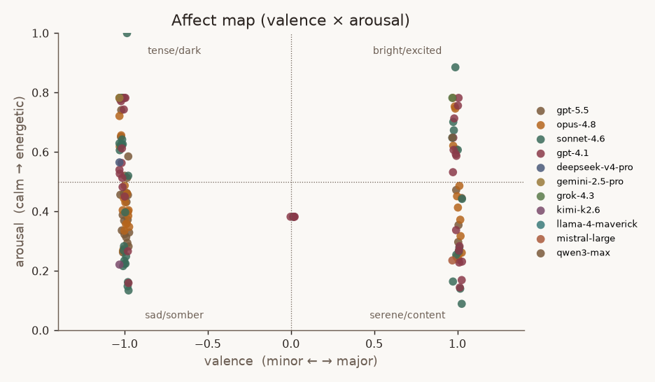
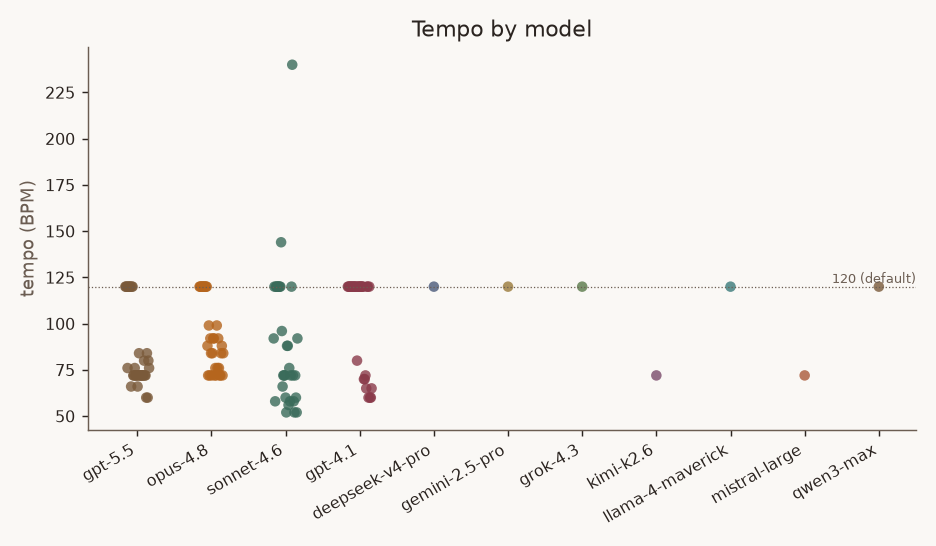
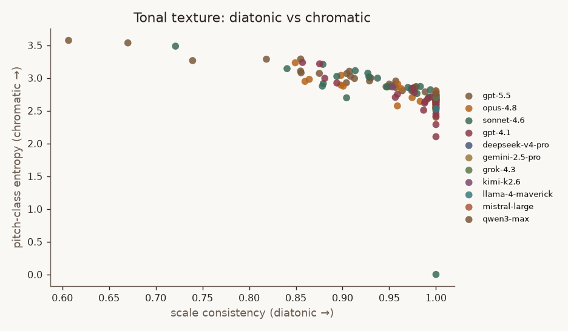

Summary metrics across 140 generated pieces
(11 models, 4 experiments, code-gen + ABC + SMT-ABC).
Metrics are standard symbolic-music descriptors (MusPy + music21); affect is a
valence/arousal proxy (Russell circumplex). Generated by llm-music report.
| model | n | minor | valence | arousal | tempo | scale consist. | note density | length (s) |
|---|---|---|---|---|---|---|---|---|
| gpt-5.5 | 4 | 100% | -1.00 | 0.47 | 85 | 0.98 | 4.81 | 81 |
| opus-4.8 | 4 | 100% | -1.00 | 0.46 | 92 | 1.00 | 3.43 | 61 |
| gpt-4.1 | 3 | 67% | -0.33 | 0.43 | 103 | 1.00 | 2.09 | 63 |
| sonnet-4.6 | 3 | 100% | -1.00 | 0.50 | 82 | 0.99 | 5.10 | 56 |
| deepseek-v4-pro | 1 | 100% | -1.00 | 0.56 | 120 | 1.00 | 2.75 | 32 |
| gemini-2.5-pro | 1 | 100% | -1.00 | 0.78 | 120 | 1.00 | 8.36 | 64 |
| grok-4.3 | 1 | 0% | 1.00 | 0.78 | 120 | 1.00 | 6.50 | 32 |
| kimi-k2.6 | 1 | 100% | -1.00 | 0.22 | 72 | 0.95 | 1.51 | 100 |
| llama-4-maverick | 1 | 0% | 1.00 | 0.65 | 120 | 1.00 | 4.00 | 8 |
| mistral-large | 1 | 0% | 1.00 | 0.23 | 72 | 1.00 | 1.72 | 50 |
| qwen3-max | 1 | 0% | 1.00 | 0.65 | 120 | 1.00 | 4.00 | 26 |
| model | n | minor | valence | arousal | tempo | scale consist. | note density | length (s) |
|---|---|---|---|---|---|---|---|---|
| gpt-5.5 | 34 | 88% | -0.76 | 0.49 | 85 | 0.92 | 5.51 | 83 |
| opus-4.8 | 34 | 59% | -0.18 | 0.49 | 94 | 0.97 | 3.93 | 55 |
| sonnet-4.6 | 33 | 64% | -0.30 | 0.43 | 91 | 0.95 | 3.96 | 88 |
| gpt-4.1 | 32 | 41% | 0.06 | 0.49 | 105 | 0.98 | 2.87 | 46 |
| deepseek-v4-pro | 1 | 100% | -1.00 | 0.56 | 120 | 1.00 | 2.75 | 32 |
| gemini-2.5-pro | 1 | 100% | -1.00 | 0.78 | 120 | 1.00 | 8.36 | 64 |
| grok-4.3 | 1 | 0% | 1.00 | 0.78 | 120 | 1.00 | 6.50 | 32 |
| kimi-k2.6 | 1 | 100% | -1.00 | 0.22 | 72 | 0.95 | 1.51 | 100 |
| llama-4-maverick | 1 | 0% | 1.00 | 0.65 | 120 | 1.00 | 4.00 | 8 |
| mistral-large | 1 | 0% | 1.00 | 0.23 | 72 | 1.00 | 1.72 | 50 |
| qwen3-max | 1 | 0% | 1.00 | 0.65 | 120 | 1.00 | 4.00 | 26 |




Note: with small n per model this is a snapshot, not a settled result — the sampling run (many free-form pieces per model) is what turns these into statistically-backed claims.